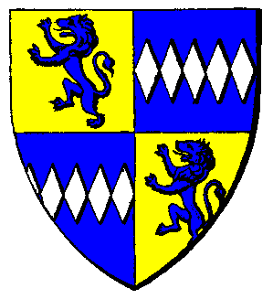

| Übersicht,
Allgemeines |
|
Was machen wir wenn.... (12  ) )
|
Tjárius
 |
Aber leute...ich fands trotzdem lustig, um die Nostalgie und Fehlstimmung hier mal beiseite zu schieben.
Habe und werde wohl nie ein spiel finden, dass ich 10 Jahre lang spiele OHNE alles gemacht zu haben ^^
Schad das das jetzt auch nicht mehr passiert,
aber vielleicht auch gut das diese Phase in eines jeden Lebens mal ein Ende finden.
Was unsere Familien und Freunde im Bezug auf dieses Spiel denken will ich großteils garnicht wissen :D
Shitty-Fuck ist nur, dass es halt der SL/Betreiber o.Ä. kackegal ist, die Spielerscahft zu informmieren...
Soweit zumindest für mich.
Und jetzt bitte weiter den Countdown zählen! |
10.12.15 17:01
 |
|
Kurator
 |
Days : 21
Hours : 1
Minutes : 51
Seconds : 3
Milliseconds : 79
Ticks : 18210630793180
TotalDays : 21,077118973588
TotalHours : 505,850855366111
TotalMinutes : 30351,0513219667
TotalSeconds : 1821063,079318
TotalMilliseconds : 1821063079,318 |
10.12.15 22:09
|
|
Telana
 |
Meine Freundin hat sich gefreut als ich Ihr vom aus erzählt habe. :-/ |
11.12.15 8:36
|
|
Tjárius
|
Haha...meine hat da auch ne Gewisse Schadenfreude, aber freuen...wenn dan im Geheimen *gg*
|
11.12.15 19:17
|
|
Kurator
|
Days : 20
Hours : 1
Minutes : 59
Seconds : 44
Milliseconds : 241
Ticks : 17351842419453
TotalDays : 20,083150948441
TotalHours : 481,995622762583
TotalMinutes : 28919,737365755
TotalSeconds : 1735184,2419453
TotalMilliseconds : 1735184241,9453 |
11.12.15 22:00
|
|
Kurator
|
Days : 19
Hours : 2
Minutes : 52
Seconds : 23
Milliseconds : 61
Ticks : 16519430610763
TotalDays : 19,1197113550498
TotalHours : 458,873072521194
TotalMinutes : 27532,3843512717
TotalSeconds : 1651943,0610763
TotalMilliseconds : 1651943061,0763 |
12.12.15 21:07
|
|
Kurator
|
Days : 17
Hours : 3
Minutes : 33
Seconds : 0
Milliseconds : 827
Ticks : 14815808270516
TotalDays : 17,1479262390231
TotalHours : 411,550229736556
TotalMinutes : 24693,0137841933
TotalSeconds : 1481580,8270516
TotalMilliseconds : 1481580827,0516 |
14.12.15 20:27
|
|
Kurator
|
Days : 16
Hours : 1
Minutes : 25
Seconds : 33
Milliseconds : 86
Ticks : 13875330869762
TotalDays : 16,0594107288912
TotalHours : 385,425857493389
TotalMinutes : 23125,5514496033
TotalSeconds : 1387533,0869762
TotalMilliseconds : 1387533086,9762 |
15.12.15 22:34
|
|
Bluemchen
 |
sic transit gloria scherbenwelten........... so long |
16.12.15 13:33
|
|
Kurator
|
Days : 13
Hours : 7
Minutes : 1
Seconds : 40
Milliseconds : 394
Ticks : 11485003943690
TotalDays : 13,2928286385301
TotalHours : 319,027887324722
TotalMinutes : 19141,6732394833
TotalSeconds : 1148500,394369
TotalMilliseconds : 1148500394,369 |
18.12.15 16:58
|
|
Altan Stormwind
 |
Früher konnte man auch mal seine Uhr nach Kuhrator stellen... |
18.12.15 17:01
|
|
Kurator
|
Days : 11
Hours : 7
Minutes : 49
Seconds : 33
Milliseconds : 205
Ticks : 9785732054539
TotalDays : 11,3260787668275
TotalHours : 271,825890403861
TotalMinutes : 16309,5534242317
TotalSeconds : 978573,2054539
TotalMilliseconds : 978573205,4539 |
20.12.15 16:10
|
|
Kurator
|
Days : 10
Hours : 2
Minutes : 34
Seconds : 27
Milliseconds : 432
Ticks : 8732674320498
TotalDays : 10,1072619450208
TotalHours : 242,5742866805
TotalMinutes : 14554,45720083
TotalSeconds : 873267,4320498
TotalMilliseconds : 873267432,0498 |
21.12.15 21:25
|
|
Kurator
|
Days : 8
Hours : 1
Minutes : 9
Seconds : 49
Milliseconds : 122
Ticks : 6953891223605
TotalDays : 8,04848521250579
TotalHours : 193,163645100139
TotalMinutes : 11589,8187060083
TotalSeconds : 695389,1223605
TotalMilliseconds : 695389122,3605 |
23.12.15 22:50
|
|
Kurator
|
Days : 6
Hours : 14
Minutes : 50
Seconds : 14
Milliseconds : 844
Ticks : 5718148447768
TotalDays : 6,61822737010185
TotalHours : 158,837456882444
TotalMinutes : 9530,24741294667
TotalSeconds : 571814,8447768
TotalMilliseconds : 571814844,7768 |
25.12.15 9:10
|
|
Kurator
|
Days : 5
Hours : 2
Minutes : 16
Seconds : 56
Milliseconds : 701
Ticks : 4402167019448
TotalDays : 5,0951007169537
TotalHours : 122,282417206889
TotalMinutes : 7336,94503241333
TotalSeconds : 440216,7019448
TotalMilliseconds : 440216701,9448 |
26.12.15 21:43
|
|
Ateara Tinuhin
 |
Also 4Players hat artig seine 4,99 eingezogen ;)
Hieß es nicht, das man da nicht separat kündigen müsse? |
27.12.15 22:09
|
|
Schuu
 |
Naja, warum sollten sie jetzt nicht einziehen? Bis zum Monatsende ist es ja noch.
Ich würd mich ärgern wenn sie nicht einziehen würden und mich schon vor Ende des Spiels damit rausschmeissen!
Wenn sie dann zum Jahreswechsel / Spielende das überschüssige Geld zurück überweisen ist doch alles gut. |
27.12.15 22:30
|
|
Ateara Tinuhin
|
glaubst du daran? ich weniger |
27.12.15 23:07
|
|
Samuel
 |
für 4 Players doch einfach, sie ziehen erstmal mal ein und hoffen das die Leute die Schleife meiden ihr Geld zurückzufordern.... Bleibt bestimmt auch nochmal was hängen.... |
28.12.15 1:18
|
|
Übersicht,
Allgemeines
|